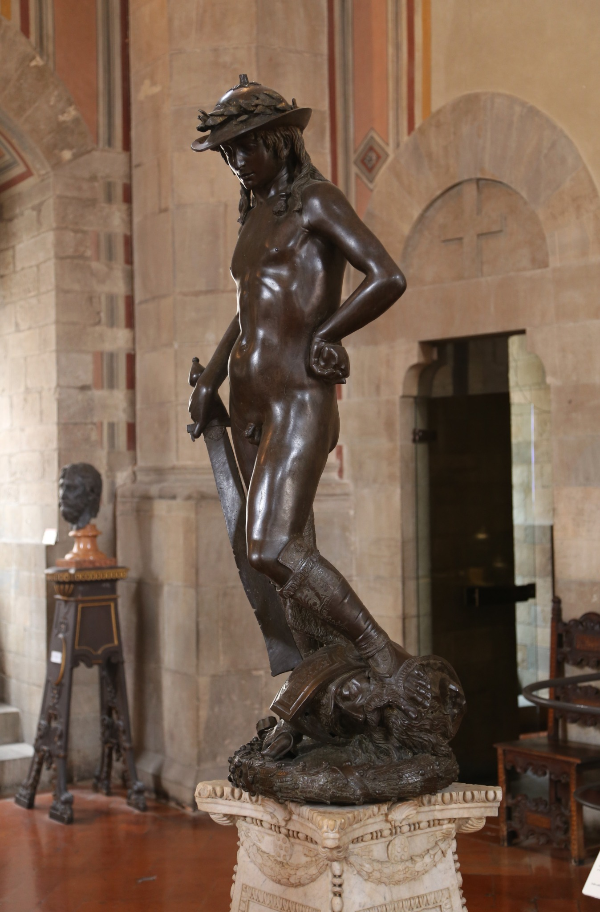
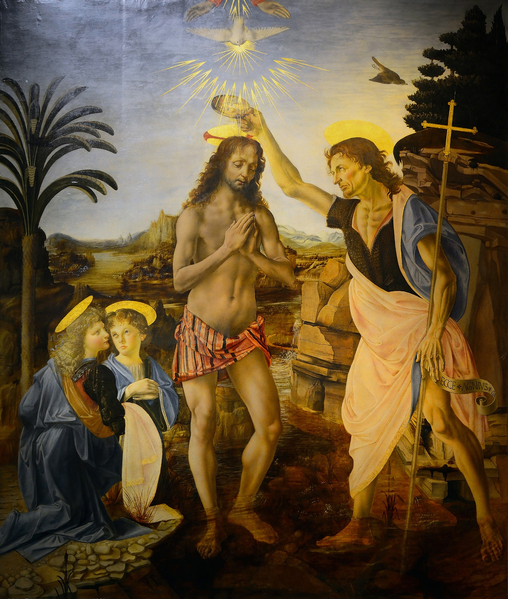
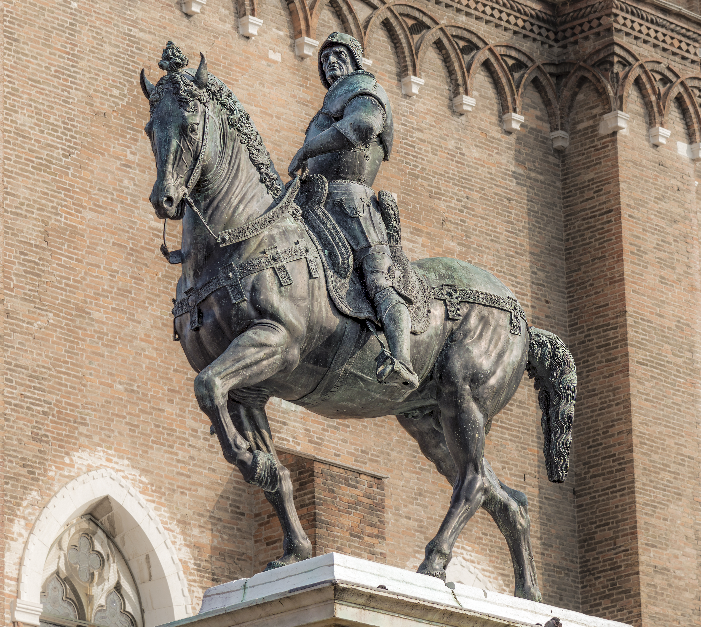

Andrea del Verrocchio
Vers 1435, Florence – 1488, Venise
« He brings bronze to life, makes gestures speak, and trains one of the greatest geniuses of the Renaissance. »
_(14776760341).jpg "Cliquer pour agrandir")
In a few words
- Born in Florence around 1435, Andrea del Verrocchio was one of the leading artists of the Florentine Renaissance. Initially trained as a goldsmith, he became a renowned sculptor, admired by the Medici family.
- In his works, bodies come alive, hands express emotions, and figures seem ready to move. His workshop, one of the most prestigious in Florence, welcomed talented young artists, including Leonardo da Vinci.
- Verrocchio died in Venice in 1488, leaving behind remarkable works and a new generation of artists.
Two Davids, Two Visions of a Hero

A nude, contemplative, almost enigmatic David.

A clothed, elegant David, proud of his victory.
David n'est pas seulement un personnage biblique. À Florence, il devient aussi un symbole de liberté : celui du plus faible qui triomphe du plus puissant grâce à son courage et à son intelligence.
Donatello réinvente le nu héroïque inspiré de l'Antiquité. Verrocchio reprend ce sujet célèbre, mais lui donne une autre présence : son David ressemble davantage à un jeune Florentin fier de son exploit.
Deux artistes, un même héros, mais deux façons de lui donner vie.
Look closely
Start by looking at the bodies. Donatello chooses nudity and a relaxed, almost fragile pose. Verrocchio dresses his David in a short tunic and gives him a more confident stance.
Now look at their faces: one seems lost in thought, while the other wears a subtle smile. Even their gestures differ: Donatello's victory feels silent, while Verrocchio's becomes an expression of self-confidence.
Understanding
David is more than a biblical figure. In Florence, he also becomes a symbol of freedom: the weaker figure who defeats the powerful through courage and intelligence.
Donatello revives the heroic nude inspired by classical antiquity. Verrocchio takes up the same celebrated subject but gives it a different presence: his David looks more like a young Florentine proud of his achievement.
Two artists, one hero, but two different ways of bringing him to life.
When Doubt Becomes a Gesture
.jpg "Cliquer pour agrandir")
Francesco Bini (Sailko) · CC BY 3.0
Look closely
Look at the hands. Thomas approaches Christ and reaches out towards the wound in his side. Christ opens his garment slightly and seems to invite Thomas to examine the wound for himself.
Observe their bodies: Thomas moves forward hesitantly, while Christ remains calm and welcoming. Their gazes and gestures create a silent dialogue.
Understanding
Verrocchio does not simply depict two religious figures: he stages a profoundly human encounter.
The two figures occupy a relatively narrow niche, yet their gestures give depth to the space. Thomas steps forward from the edge of the niche, while Christ shifts to one side to welcome him.

When Hands Speak
_01.jpg "Cliquer pour agrandir")
Francesco Bini (Sailko) · CC BY 3.0
Look closely
First, look at the hands: her slender fingers seem to be still moving around the bouquet. They immediately draw our attention.
Then let your gaze move up to her face, calm and reserved. Unlike her hands, it reveals almost nothing of the young woman's emotions.
Understanding
During the Renaissance, sculpted busts generally ended at the shoulders. Verrocchio chooses to include the hands, giving them an essential role in the portrait.
This choice transforms the sculpture: the young woman is no longer simply a face, but becomes a living presence. Her gestures suggest sensitivity, perhaps even a story we know nothing about.
The bouquet retains its mystery: is it a symbol of love or simply an elegant accessory? Nothing allows us to say for certain.
In Verrocchio’s work, the hands speak as eloquently as the face.
When the painting take like

Own work · CC BY-SA 4.0
Look closely
ook at Christ standing in the waters of the Jordan, while Saint John pours water over his head. Their postures are solemn, yet their gestures remain natural.
JeOn the left, two angels witness the scene. Observe their faces, their hair, and the folds of their garments: there are noticeable differences in the way they are painted.
Finally, let your gaze wander across the landscape. The rocks, the water, and the distant mountains open up the composition to the natural world.
Understanding
The Baptism of Christ marks the beginning of his public ministry. The dove descending from heaven symbolizes the Holy Spirit, while the hand of God appears above the scene.
Verrocchio organizes the composition around this sacred event, but also gives it a profoundly human dimension.
The painting also reveals how Florentine workshops operated, with several artists sometimes contributing to the same work. The differences in technique and style thus become particularly interesting to observe.
One painting, several artistic sensibilities, and a new way of looking at nature.

Your Turn!

Which horse seems to move forward with the greatest energy?
Which rider conveys a greater sense of calm and control?
Explore Further

Key takeaways
- Bringing bronze to life. Verrocchio makes his sculptures seem alive through movement, facial expressions, and gestures.
- Letting bodies speak. A smile, a hand, or a glance can tell a story and express an emotion.
- Passing on his art. In Florence, his workshop trains a new generation of artists, including Leonardo da Vinci, who will continue exploring nature and movement.